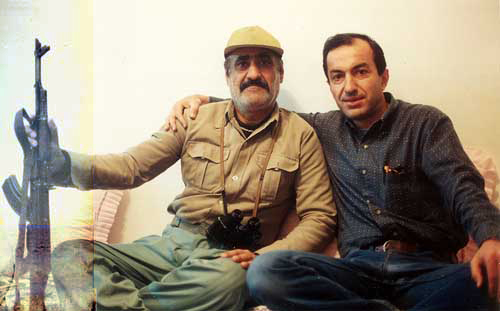
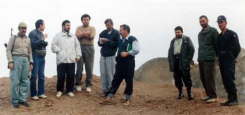
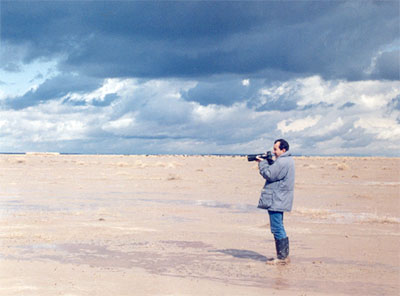
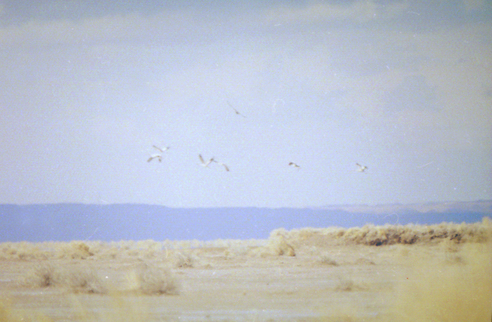
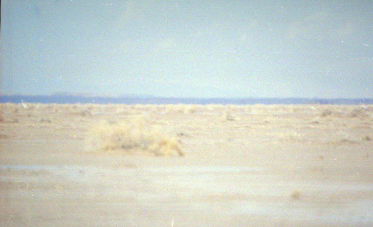

Copyright © Ali Parsa 1998-2011
All rights reserved
درنای سيبری در شرق ايران Siberian White Crane In 1994 we traveled to eastern Iran, near the border with Afghanistan, to verify a report by the Internation Crane Fund concerning a radio signal from a transmitter previously mounted on a Siberian Crane coming from that area.

We were accompaned by Mr. Shamlu of Torbat Heydarieh Environmental Protection Organization, and his Kurdish colleague whom I named our "Capitane", refering to 'Dersu Uzala' who in the great film of Kurosava used to address his superior this way. Our Dersu used to call us Agha-y Mohandes (Mr. Engineer.)

We were briefly detained and questioned by the border guards. Left to right: 'Capitane', Ali Parsa, a member of the Ministry of Intelligence, Farrokh Mostofi, Mr. Shamlu of EPO, Hassan Mortazavi, three border guards. Picture taken by Reza Najafi-Manesh.

Before our brief detntion I was able to take pictures of the flock.
 

Copyright © Ali Parsa 1998-2011
All rights reserved